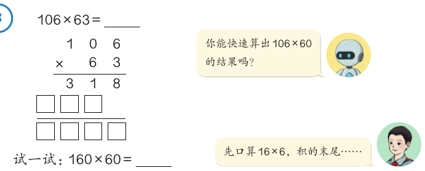
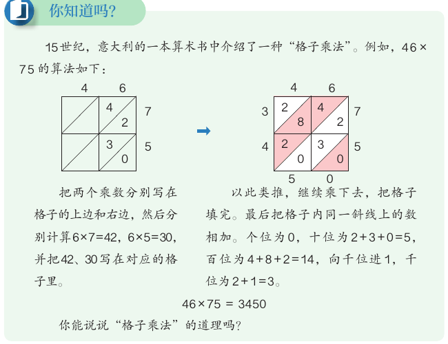
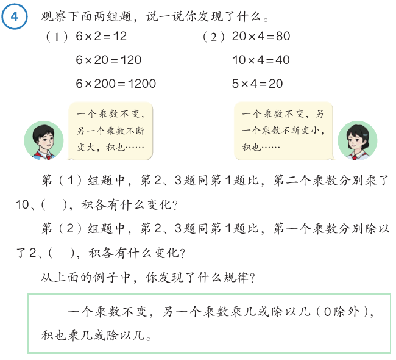
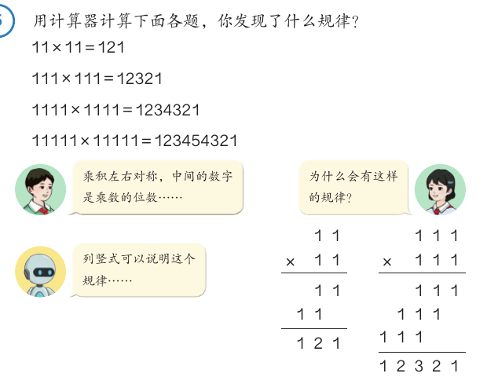
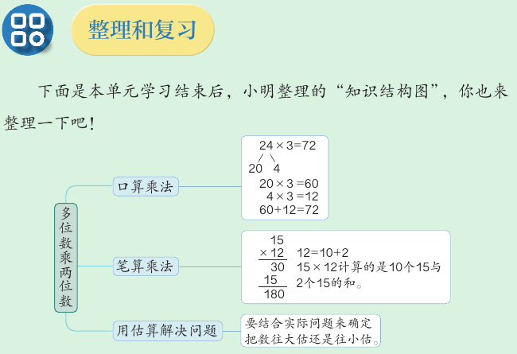

乘数末尾有 0、积的变化规律与估算
160 × 60 怎样算得又快又对？一个乘数变大 10 倍，积会怎样？带 2600 元能买 18 套服装吗？这一课学乘法里的简便写法、规律和估算。
学完本课，你能够：
01乘数中间或末尾有 0
先说结论：乘数中间有 0，照常用竖式算。乘数末尾有 0，可以先把 0 前面的数相乘。两个乘数末尾一共有几个 0，就在积的末尾添上几个 0。
教材的例 3 是 106 × 63。106 的十位上是 0，竖式照常算：先用 3 去乘，得 318；再用 6 去乘。

教材接着问：你能快速算出 106 × 60 的结果吗？试一试 160 × 60。小朋友提示：“先口算 16 × 6，积的末尾……”
题目来自教材第 48 页例 3、“试一试”和“做一做”。左右对比是课程补充的演示，教材只要求会算。
02你知道吗：格子乘法
先说结论：15 世纪，意大利的一本算术书介绍了“格子乘法”。它把每两个数位相乘的积写进格子，最后沿斜线相加。教材的例子是 46 × 75 = 3450。

- 把两个乘数分别写在格子的上边和右边。
- 分别计算 6 × 7 = 42，6 × 5 = 30，把 42、30 写在对应的格子里。
- 以此类推，继续乘下去，把格子填完。
- 把格子内同一斜线上的数相加。个位为 0，十位为 2 + 3 + 0 = 5。百位为 4 + 8 + 2 = 14，向千位进 1。千位为 2 + 1 = 3。
按教材第 48 页“你知道吗”的方法画。除 46 × 75 以外的题是课程补充的练习。
03积的变化规律
先说结论：一个乘数不变，另一个乘数乘几或除以几（0 除外），积也乘几或除以几。

6 × 20 = 120
6 × 200 = 1200
一个乘数不变，另一个乘数不断变大，积也不断变大。
10 × 4 = 40
5 × 4 = 20
一个乘数不变，另一个乘数不断变小，积也不断变小。
起始算式来自教材第 49 页例 4、“做一做”和练习九。只做能整除的除法；除不尽的情况以后再学。
“做一做”第 2 题：一块长方形绿地，面积是 200 m²，宽是 8 m。长不变，宽增加到 24 m。想一想：宽乘了几？面积也会乘几？
04用计算器探索规律
先说结论：先用计算器算几道题，找出规律；再用规律直接写出后面的得数；最后用计算器检验。

例 5 里，小朋友说出了发现。一个说：“乘积左右对称，中间的数字是乘数的位数……”另一个问：“为什么会有这样的规律？”机器人提示：“列竖式可以说明这个规律……”
教材画出了 11 × 11 和 111 × 111 的竖式。每一行都是一串 1，一行比一行往左错一位。同一列上有几个 1，积的那一位就是几。
四组题来自教材第 50 页例 5、“做一做”和练习九第 10 题。积由程序精确计算，相当于计算器。
05用估算解决问题
先说结论：有的问题用估算就能解决。要根据解决的问题，确定把数往大估，还是往小估。
教材的例 6：张老师要为舞蹈队选购 18 套相同的服装，她带了 2600 元。三款服装每套分别是 108 元、130 元、208 元。可以买哪几款？
| 款式 | 精确计算 | 估算 | 结论 |
|---|---|---|---|
| 第一款 108 元 | 108 × 18 = 1944，2600 > 1944 | 估大：110 × 20 = 2200 | 可以买 |
| 第二款 130 元 | 130 × 18 = 2340，2600 > 2340 | 估大：130 × 20 = 2600 | 可以买 |
| 第三款 208 元 | 208 × 18 = 3744，2600 < 3744 | 估小：200 × 18 = 3600 | 不能买 |
为什么第一款要往大估？往大估以后是 2200 元，真实的总价比 2200 元还少，所以钱一定够。第三款往小估，已经要 3600 元，真实的总价更多，所以钱一定不够。
问题来自教材第 53–56 页。往大估、往小估都估成整十数，这是课程的简化；教材的估法见上表。
06整理和复习
先说结论：本单元学了三件事：口算乘法、笔算乘法、用估算解决问题。它们背后是同一个想法：把乘数拆开，分别相乘，再把积相加。

- 口算乘法：24 × 3，把 24 拆成 20 和 4，20 × 3 = 60，4 × 3 = 12，60 + 12 = 72。
- 笔算乘法：15 × 12，12 = 10 + 2。15 × 12 计算的是 10 个 15 与 2 个 15 的和。
- 用估算解决问题：要结合实际问题来确定把数往大估还是往小估。
我发现不管几位数乘几位数，都是用其中一个乘数的每一位数和另一个乘数分别相乘，再把积相加。教材第 55 页
口算和笔算的方法，可以复习上一课 L06。
07自测与速记
速记表
| 要点 | 一句话 |
|---|---|
| 乘数中间有 0 | 照常用竖式算，0 要占住数位 |
| 乘数末尾有 0 | 先算 0 前面的数，再在积的末尾添上两个乘数末尾 0 的总个数 |
| 格子乘法 | 每格写两个数位的积，同一斜线上的数相加；46 × 75 = 3450 |
| 积的变化规律 | 一个乘数不变，另一个乘数乘几或除以几（0 除外），积也乘几或除以几 |
| 计算器找规律 | 先算几道，找规律，用规律写得数，再检验 |
| 估算 | 根据问题定往大估还是往小估；估出的数不能判断时就精确计算 |
相关课程
教材：人教版《数学》四年级上册第三单元“多位数乘两位数”第 48–57 页。标为“补充”的内容和模拟演示是课程作者的解释，不是教材原文。